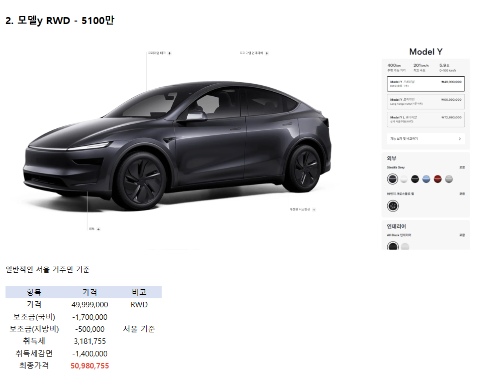
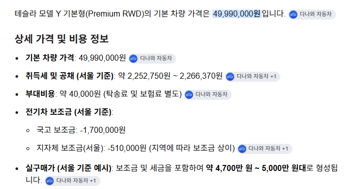

그것은 테슬라 모델y 기본형
테슬라 모델 y 보다 상품성 못한데 가격이 비싸면 욕 뒤지게 먹고 있음
특이점은 테슬라모델y 포지션만 현기에 없음
아반데 4000만원
투싼 5000 만원 논란일때 늘 비교 대상인 차
옵션 장사도 모델y 때문에 해먹기 어려움
현기가 차값올리고 싶어도 못올리는 거대한 방파제가 모델y
모델y 없었으면 지금보다 차가격더 올랐을지도


그것은 테슬라 모델y 기본형
테슬라 모델 y 보다 상품성 못한데 가격이 비싸면 욕 뒤지게 먹고 있음
특이점은 테슬라모델y 포지션만 현기에 없음
아반데 4000만원
투싼 5000 만원 논란일때 늘 비교 대상인 차
옵션 장사도 모델y 때문에 해먹기 어려움
현기가 차값올리고 싶어도 못올리는 거대한 방파제가 모델y
모델y 없었으면 지금보다 차가격더 올랐을지도
아 이건 내가 잘못 가져왔네.
근데 현재 한국에파는 모델Y 프리미엄 RWD기준으로봐도 현기 풀옵에 비해 안들어가는게 많은건 사실이니 깡통 소리 들어도 억울할 이유 없지않음?
테슬라가 현기 풀옵에 비해 좆도 차이 없는데 ㅋ 니도 차이점이라 할만한게 없으니 못말하고 대충그럴꺼같은데로 넘기는거 아님? 뭐 해봤자 마사지시트나 차이나겠지ㅋㅋㅋㅋ
깡통은 아무리 생각해도 아닌거같은데,
진짜 뭐 취향에 따라 풀옵에 동치는 아니어도 가깝다고하면 풀옵에 가깝지 깡통에 가깝지않음
모델y가 깡통이라기보다 가격비교를 위해 가져온 대상들이 최대트림 기준 가격이라는게 문제임
본문에 투싼 5천이라고 나와있잖아? 근데 그 투싼이 4륜 최고 트림 모델이거든
근데 그에 반해 모델y는 rwd 가격을 가지고 비교하니까 말이 많은거임
모델y도 똑같이 최고 트림인 롱레인지 awd로 놓고 보면 6500이거든
와입 YL AWD 사주고 나도 자주 몰고 다니는데 그냥 가성비 좋은 펀카? 정도로 생각하는게 좋음. 전비랑 오파는 저세상 급이지만 그거 외에는 다 포기하고 타는 차임. 구형 Y에 비하면 모든면에서 좋아진건 맞지만 요철구간은 여전히 씨발소리 절로 남 ㅋㅋ 테슬라는 현기 패는거 잘하고 있다고 생각하지만 가끔 이걸로 부심부리는 테슬람들 보면 이해가 안되긴 함.
난 새차를 살 여유는 없지만
산다면 테슬라를 사고 싶음
이유는 자율주행을 떠나서 준수한 디자인과 오버휀다 같은 요소들이 첨가된 모양새, 그리고 더 경험이 많은 시스템이 안정적일 것이라는 신뢰도 때문임.
현기는 이제 막 나왔고 더 비싸고 후발주자이기 때문에 선택이 꺼려짐. 그리고 디자인이 하나같이 내 취향이 아님.
우리나라에 스탠다드 없어